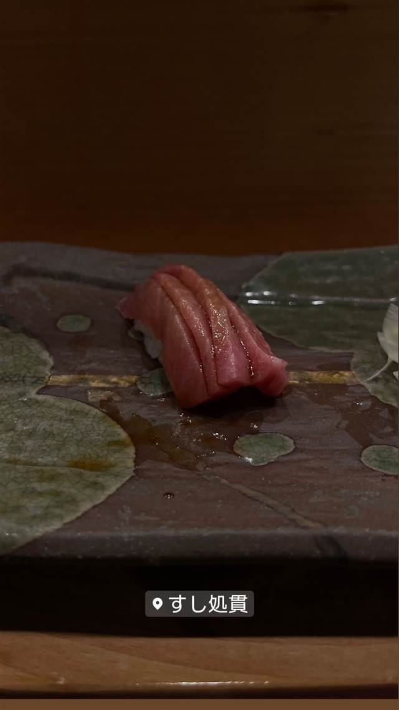

寿司 · 寿司 · 小樽運河
すし処貫
積丹出身の大将が20年修業して開いた、旬魚のにぎり
すし処貫
積丹町美国出身の大将・菅野氏が、実家の寿司屋にルーツを持ち、余市・札幌・小樽で20年間修業した後、2009年に花園銀座通りで開業。2019年3月に小樽・色内へ移転した寿司店で、屋号の「貫」は握り寿司の数え方にちなむ。
TRIVIA
豆知識
- 「貫」という屋号は、握り寿司を数える単位（一貫、二貫…）にちなむ。
- 実家は出身地・積丹町美国の寿司屋で、家業にルーツを持って寿司の道へ進んだ。
REVIEWS
世間の評判
3.21食べログ
旬の魚の鮮度と夫婦の温かい接客
- ボタンエビやキンキなど旬の魚の鮮度の良さを評価する声が多くある
- ご夫婦の礼儀正しく温かい接客とアットホームな雰囲気を評価する声が多い
- 地元客も多く訪れるリーズナブルな店だが味は普通という声もある
食べログ 口コミ40件
| 創業 | 2009年に花園銀座通りで開業、2019年3月に色内1丁目へ移転。 |
|---|---|
| 系譜 | 積丹町美国出身の大将・菅野氏が、余市・札幌・小樽の寿司店で20年間修業して独立。 |
| 看板 | 旬の魚のにぎり（大ボタンエビ、にしんの寿司など） |
| こだわり | 厳選した旬の魚を職人の技で握る。 |
| どこから | 遠方 |
| 予算 | 夜 ¥8,000～¥9,999 |
| 定休日 | 水曜 |
| 場所 | JR小樽駅 北海道小樽市色内1丁目7番3号 |
| メモ | 小樽・色内エリアの寿司店。ランチ11:30～14:00、ディナー17:00～21:00、水曜定休。 |
食べたもの：マグロ寿司
NEARBY
近い店・同じ系統の店
-
 アイス・ジェラート JR小樽駅
山中牧場 小樽店
100％乳製品を3日熟成させた牛乳ソフトクリーム
昼 ～¥999 夜 ～¥999
アイス・ジェラート JR小樽駅
山中牧場 小樽店
100％乳製品を3日熟成させた牛乳ソフトクリーム
昼 ～¥999 夜 ～¥999
-
 寿司 銀座
みこ寿司（銀座のみこ寿司）
豊洲の初競りにも参加、名物はウニパラダイス
昼 ¥10,000～¥14,999 夜 ¥10,000～¥14,999
寿司 銀座
みこ寿司（銀座のみこ寿司）
豊洲の初競りにも参加、名物はウニパラダイス
昼 ¥10,000～¥14,999 夜 ¥10,000～¥14,999
-
 寿司 梅ヶ丘
寿司の美登利 総本店（梅ヶ丘）
1963年創業で穴子を一本まるごと握った元祖とされる看板メニューが今も残る
昼 ¥2,000～¥2,999 夜 ¥3,000～¥3,999
寿司 梅ヶ丘
寿司の美登利 総本店（梅ヶ丘）
1963年創業で穴子を一本まるごと握った元祖とされる看板メニューが今も残る
昼 ¥2,000～¥2,999 夜 ¥3,000～¥3,999
-
 寿司 二子玉川駅
Aburi TORA 熟成鮨と炙り鮨 二子玉川ライズ店（旧店名：九州寿司 寿司虎 Aburi Sushi TORA）
冷凍魚を特殊庫で熟成させる氷結熟成鮨は業界初の試みとされる技法
昼 ¥2,000～¥2,999 夜 ¥2,000～¥2,999
寿司 二子玉川駅
Aburi TORA 熟成鮨と炙り鮨 二子玉川ライズ店（旧店名：九州寿司 寿司虎 Aburi Sushi TORA）
冷凍魚を特殊庫で熟成させる氷結熟成鮨は業界初の試みとされる技法
昼 ¥2,000～¥2,999 夜 ¥2,000～¥2,999
-
 寿司 虎ノ門ヒルズ
意気な寿し処阿部 虎ノ門ヒルズ店
シャリは店主の実家、魚沼産コシヒカリを使う江戸前寿司
昼 ¥1,000～¥1,999 夜 ¥6,000～¥7,999
寿司 虎ノ門ヒルズ
意気な寿し処阿部 虎ノ門ヒルズ店
シャリは店主の実家、魚沼産コシヒカリを使う江戸前寿司
昼 ¥1,000～¥1,999 夜 ¥6,000～¥7,999
-
 寿司 三軒茶屋
寿司とワイン サンチャモニカ
握り99円から、ワインと日本酒は499円からの寿司酒場
昼 ¥1,000～¥1,999 夜 ¥5,000～¥5,999
寿司 三軒茶屋
寿司とワイン サンチャモニカ
握り99円から、ワインと日本酒は499円からの寿司酒場
昼 ¥1,000～¥1,999 夜 ¥5,000～¥5,999